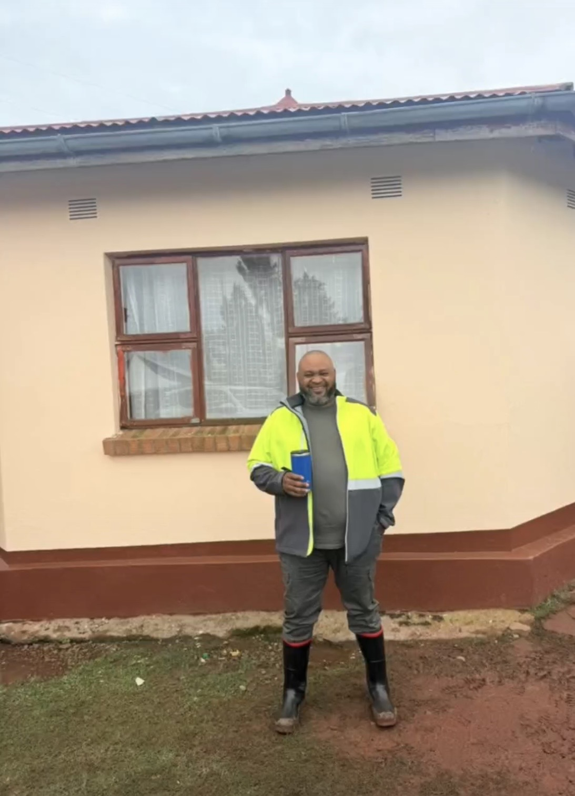
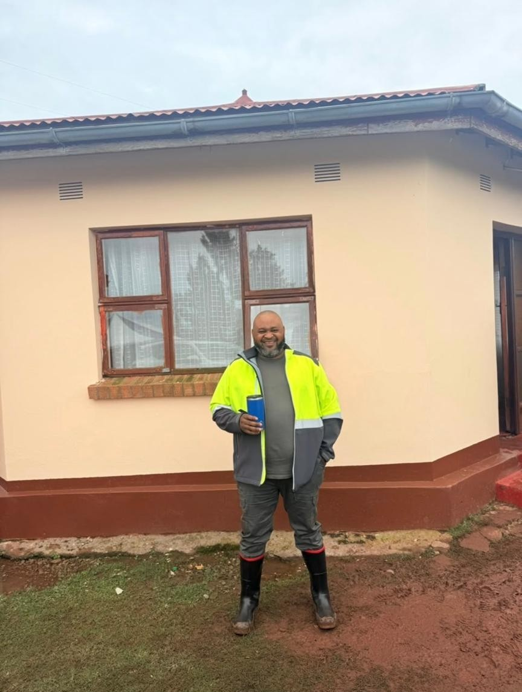

This book gathers the tributes shared by family, friends and the Qeqe community, and is presented to the Pukuza family in love and remembrance.
1
A Word from the Community
Qeqe Community Development
When word reached us that Nzuzo had passed, messages began to arrive from every corner - from Bangweni and Qeqe, from friends met at university, from neighbours and from colleagues near and far. Each message carried the same thread: a generous heart, a warm laugh, and a man who gave quietly and never counted the cost.
In these pages he is called by many names - Dlamini, Zizi, Njokweni, Makhwabe, Mchana - each one a sign of belonging, each one spoken with love.
This booklet gathers those messages exactly as they were written. They come from different hands and different voices, in English and in isiXhosa, yet they speak as one: of kindness that lifted others, of a cheerleader who rejoiced in the success of his community, and of a presence that will be deeply missed.
We hope that in the days and years ahead, these words will remind you of how widely Nzuzo was loved, and of the light he brought into the lives around him.
Enkosi. Thank you. Qeqe Community Development
2
Messages of Love and Remembrance
Tributes
Izikhumbuzo
From the family, friends and community of Nzuzo Pukuza
3
Nzuzo Pukuza · In Loving Memory
“
Heartfelt Condolences to the Pukuza family, friends, Colleagues and Qeqe community at large. We know that God called and Nzuzo responded. He will never ever make a mistake. It is our time now to continue with the journey of developing our communities. Rest in peace Zizi you will always be remembered by all of us in our community development initiatives., MYSRIP….
Khaya Mabaleka
29 September 2026
4
Nzuzo Pukuza · In Loving Memory
“
Ndimkhumbula ngothanda uhleka Nzuzo. Ndimazi through mutual friends uLiso no Mcd as abakhaya bakhe. Wonderful guy he was.
Thixo usohlute wena sisakubuka futi sijonge lukhulu kuwe kwi development yelali. May the Lord welcome you with both hands. Ngxe Dlamini. May your handsome soul rest in peace. OoNgcuthigala bakwamkele kwelolizwe. Uze uncede ukhusele uTata wakho, uncede ungamlibali tu. Ukhusele Family yako yonke.
I am so sorry for your loss. I am thinking of you and your family during this difficult time wanga ungaphumla kakuhle Njokweni. 🕊️🕊️🕊️🕊️
Zolani Siguba
29 September 2026
10
Nzuzo Pukuza · In Loving Memory
“
You left us by surprise Dlamini. Inene isitya esihle asidleli...I pray for peace and strength for your family at this difficult time.
Ayanda Mniki
29 September 2026
11
Nzuzo Pukuza · In Loving Memory
“
Heartfelt condolences to the family and friends, stay strong and keep well. RIP Makhwabe 🕊️🕊️🕊️
Ayanda Siguba
Qeqe Community Development · 29 September 2026
12
Nzuzo Pukuza · In Loving Memory
“
Dlamini! Your kindness, your presence and your commitment to our community touched more lives than you will ever know. We are heartbroken to lose you, yet grateful for every moment we shared. Your spirit will live on in the community you loved and served. Rest in peace, brother. Until we meet again.
Liso Mbiza
Qeqe Community Development (Legends) · 29 September 2026
13
Nzuzo Pukuza · In Loving Memory
“
Nzuzo, this has come as a shock that you have transcended and are nolonger with us. Thank you for your kindness, always a joy to be around you. You were one of a kind man. Phumla ngoxolo mhlobam.🤍
Gando Stenge-Balfour
Varsity friend · 30 September 2026
14
Nzuzo Pukuza · In Loving Memory
“
"Short lives can leave the longest marks. Yours left an unending mark on everyone that new you."
May all your families and friends find comfort during this time, your memory will live on Dlamini, you were an example and inspiration to many.
Kuhle Siguba-Vanda (Madlamini)
Qeqe · 30 September 2026
15
Nzuzo Pukuza · In Loving Memory
“
Ukuba ubuyazile uba uyahamba ngalamzuzu I am deeply sure ngowubacengile wabaxelela your responsibility "utata wam" umhlekazi.
Rest in Peace ke bhuti 😭. Thank you for allowing us to share your parents , your updates and respect. Isitya esihle asidleli.
Isiquququ,intonga yesekhosi kayise,. Ndingabalisa nale yokuya ePasikeni uyokusiphekisa xa kupheka iLower section in the name of your parents.
RIP bhuti sonakele
Pam Zihlangu
Bangweni · 30 September 2026
16
Nzuzo Pukuza · In Loving Memory
“
Gone too soon
You were a great cheerleader in the true sense. You really loved ukubona abantu bephumelela and ungonqeni ukuxhasa where you see a good cause. I remember your huge financial contribution to Sakhikamva Development Foundation and you wanted no recognition, just wanted to support behind the scenes, siyabulela Dlamini. Our Foundation imile and getting huge sponsorship but you planted the seed whe we had nothing.
Last time sonwabile nawe was 19-20 July 2025 emgidini wonyana wam, apho sasicula ingoma zecawa kwasa phandle, little did I know it's our last happy moment. Rest in eternal peace Mchana, forever in our hearts 🙏
MAKHI ZIHLANGU
Bangweni · 30 September 2026
17
Nzuzo Pukuza · In Loving Memory
“
We mourn the loss of a remarkable soul, a dear friend, a devoted father, and a beloved brother. Words cannot fully express the sadness that fills our hearts as we say goodbye.
As a friend, you brought laughter, kindness, and unwavering support to those fortunate enough to know you.
Your presence touched many lives, and the impact you made will continue to be felt for years to come. Though you may no longer walk beside us, your spirit, wisdom, and love will remain forever in our hearts.
May your family find comfort in the wonderful memories you created, strength in the love that surrounds them, and peace in knowing that you will never be forgotten.
Rest in peace Dlamini, my friend. Your journey on earth has ended, but your legacy of love, friendship, and family will live on forever.
Ludwe Mazimela
Bangweni · 30 September 2026
18
Nzuzo Pukuza · In Loving Memory

“
A heart of gold stopped beating,Working hands at rest , God broke our hearts to prove to us ,He only takes the best ,Leaves and flowers may wither ,The golden sun may set , But the hearts that loved you dearly , Are the ones that won’t forget. Rest easy Dlamini 🕊️
Asipe ndikinda
Bangweni · 30 September 2026
19
Nzuzo Pukuza · In Loving Memory

“
Ngenxa yongakholelwa into endiyivayo Dlamini ngalontseni yova ezindaba zimbi, I went and checked your WhatsApp status. Ndibone your last few pictures ozithathe lamini. Ulale ngoxolo mfowethu
Liso Mbiza
Qeqe Community Development (Legends) · 30 September 2026
20
Nzuzo Pukuza · In Loving Memory
“
Xa abashumayeli bethetha uba into ezelwe ngu mfazi imihla yayo mifutshane kuzoko kuthethwa into enje, usizimele Njokweni sisakubuka. Uthando osinikeze lona asisoze silulibale, ubukho bakho nakwintoni na eyenziwayo bebubonakala. Kusapho nezalamene ngxee uThixo anomeleze ngeli xesha lobunzima. Hamba ke Njokweni uyophumla umsebenzi ebekunike wona uBawo uwugqibile umphefumlo wakho uphumle ngoxolo.
Nolizwi Mhambi
30 September 2026
21
Nzuzo Pukuza · In Loving Memory
“
To a life well lived, a life with full of kindness, love and faith.
You were the gift to us. Your laughter, your wisdom, your jokes will live on forever in our hearts.
Pumla ngoxolo Nzuzman
We will not say good bye but see you later
Matthew 25 :23 (Well done good and faithful servant. You have been faithful. Come and share your masters happiness)
REST Njonkweni.
Nokulunga Siguba
Qeqe Community development · 30 September 2026
22
Nzuzo Pukuza · In Loving Memory
“
Gone too soon.
Rest in peace Dlamini.
Condolences to the family
Somz
2 October 2026
23
Nzuzo Pukuza · In Loving Memory
“
May GOD comfort you in this darkest hour.May Zizi's soul rest in peace.
Condolences to the family.
Avela Ngcwangu
Family Friend · 2 October 2026
24
With Gratitude
Qeqe Community Development
This booklet was compiled from the tributes received through the online memorial page for Nzuzo Pukuza, between 29 September and 2 October 2026.
Our thanks go to every person who took the time to write - for the memories shared, the comfort offered, and the love poured into each message.
To the Pukuza family: may these words carry you in the days ahead, and may Nzuzo’s memory remain a blessing to you always.
The messages are reproduced as they were received, in the language in which they were written. Names appear as their authors signed them.
Qeqe Community Development
25
Phumla ngoxolo
Rest in peace
“I am the resurrection and the life. The one who believes in me will live, even though they die.”
John 11:25
Lala ngoxolo, Dlamini.
With deepest sympathy and abiding love, Qeqe Community Development